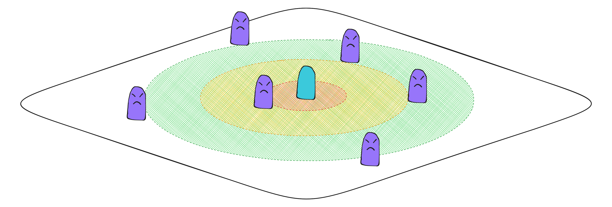
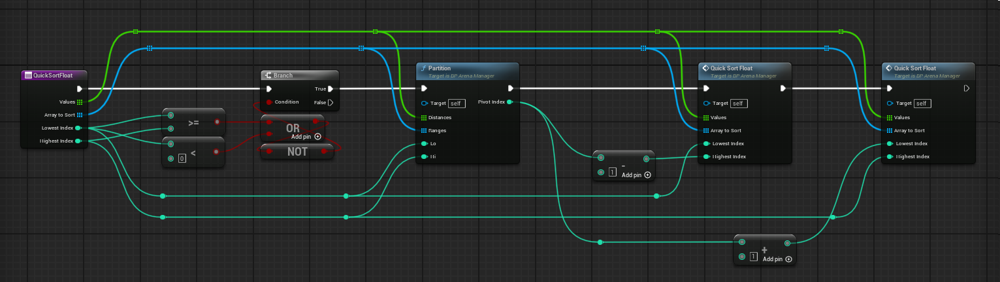
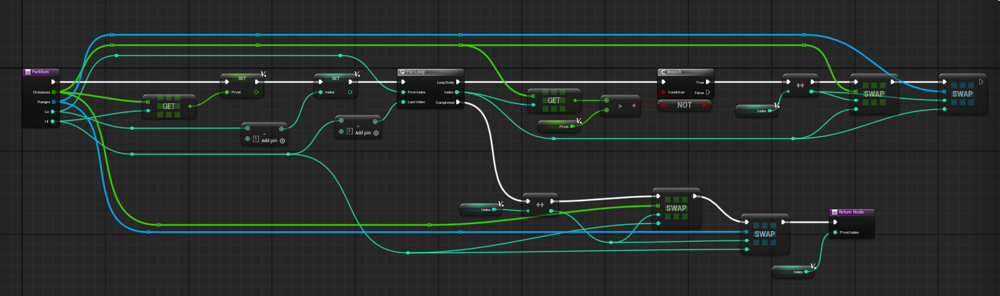
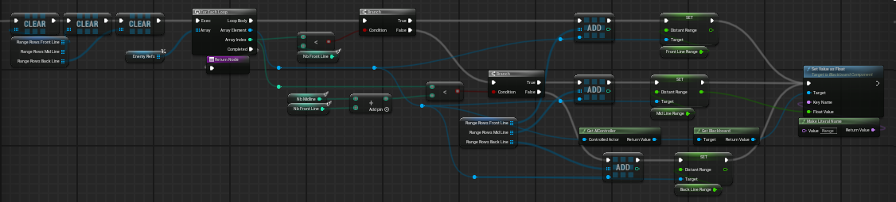
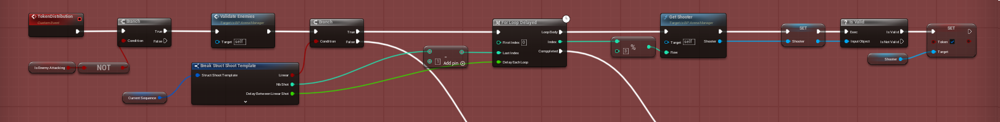
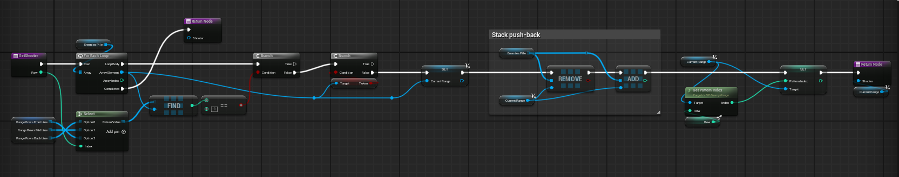

Here, I will present the main lines of the enemy behavior in Nirvana, my graduation game.
The goal is to make the enemies' behavior feel natural.
Each of them has to give the impression to be unique, without hindering each other.
And most importantly, since it is a bullet-hell, the enemy positions and the bullet patterns are crucial.
We don't want the player to be overwhelmed or unaffected.
Enemy Behavior
Solution:
The main idea is to manage 3 "zones" around the player.
I will name them:
- front row
- middle row
- back row
This will help to:
- Spread the enemies evenly around the player
- Calculate the bullet-hell shoots-sequences

Sorting the Enemies
I use a simple partition quicksort
to sort the enemies according to their distance from the player.
This function is very sufficient for its purpose.
Here is how I implemented it on blueprint:
This function is very sufficient for its purpose.
Here is how I implemented it on blueprint:


And now comes the idea of the 3 "zones".
Once the enemies are sorted, they are dispatched on a zone by modifying their range. Because their movements are based on their range, they will be placed naturally.
Their references are also saved in an array for the corresponding zone.
This is these 3 arrays that provide the control over the enemies.
I chose this class to inherit from Actor, because it made it easier for the level-designers to manage each area differently. However, this could have been a game-subsystem or something else depending on how we want to manage the battle system.
Once the enemies are sorted, they are dispatched on a zone by modifying their range. Because their movements are based on their range, they will be placed naturally.
Their references are also saved in an array for the corresponding zone.
This is these 3 arrays that provide the control over the enemies.

The range values depend on the corresponding battle-arena
(which is the class that manages the coordination algorithms).
This is useful to adapt the zones' sizes, depending on the battle environment (small, big, narrow, circular, etc...).I chose this class to inherit from Actor, because it made it easier for the level-designers to manage each area differently. However, this could have been a game-subsystem or something else depending on how we want to manage the battle system.
With this sorting, the enemies will stand at an average predetermined distance from the player in real-time;
Meaning that even if the player moves, the enemies will adapt their position.

Meaning that even if the player moves, the enemies will adapt their position.
Shoots Calculation
Now that we have control the enemies and their positional behavior,
it is way much easier to control their shoots.
For example I can launch a shoot sequance such as:
- back row (wait 0.2s)
- middle row (wait 0.2s)
- front row
A shoot sequence launching is actually a token distribution. Once all the tokens are retreived (plus other optional parameters), another distribution is called.
For example I can launch a shoot sequance such as:
- back row (wait 0.2s)
- middle row (wait 0.2s)
- front row

I set up a simple token system for the shoot sequences so as not to disrupt the enemies' current behavior.
They shoot when they can.A shoot sequence launching is actually a token distribution. Once all the tokens are retreived (plus other optional parameters), another distribution is called.
To select the current shooter of a zone, it is very simple.
I have a stack of references for each enemy. That way, once an enemy gets
a token, it is pushed-back to the bottom of the "queue".
I also prioritize the low health enemies because they are more likely to be the current player's target
For clarity, this is not included in the above blueprint. There are other details like this that I didn't mentionned for the same reason.

Each enemy type has different patterns, and they shoot the corresponding pattern according to their current position.
I also prioritize the low health enemies because they are more likely to be the current player's target
For clarity, this is not included in the above blueprint. There are other details like this that I didn't mentionned for the same reason.
Conclusion